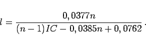
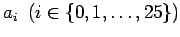
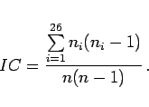
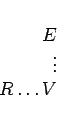

Inhalt Index DeskTop Bronstein

 Algebra und Diskrete Mathematik Kryptologie Methoden der klassischen Kryptoanalysis
Algebra und Diskrete Mathematik Kryptologie Methoden der klassischen Kryptoanalysis


Mit der kombinierten Methode von KASISKI und FRIEDMAN ist es möglich, VIGENERE-Chiffren zu brechen. Dabei wird die Tatsache ausgenutzt, daß bei diesem Chiffrierverfahren das Schlüsselwort periodisch verwendet wird. Es treten also Wiederholungen von Teilfolgen im Schlüsseltext auf, wenn gleiche Klartextfolgen mit gleichen Schlüsselfolgen verschlüsselt worden sind. Der Abstand solcher übereinstimmender Teilfolgen mit der Länge > 2 im Schlüsseltext ist ein Vielfaches der Schlüssellänge. Gibt es mehrere sich wiederholende Schlüsseltextfolgen, dann muß die Schlüssellänge den größten gemeinsamen Teiler der Abstände teilen. Diese Überlegung wird KASISKI-Test genannt. Man muß aber die Möglichkeit in Betracht ziehen, daß solche Übereinstimmungen auch durch Zufall enstanden sein könnten und damit das Ergebnis verfälschen würden.
Während der KASISKI-Test die Schlüsselwortlänge nur bis auf Vielfache und Teiler liefert, gibt der Friedman-Test die Größenordnung der Schlüsselwortlänge an. Für die Schlüsselwortlänge l eines VIGENERE-verschlüsselten Klartextes in deutscher Sprache mit einem Schlüsseltext der Länge n (Zeichenzahl) gilt
|  | (5.298a) |
Dabei ist IC der Koinzidenzindex des Schlüsseltextes, der sich wie folgt aus den Anzahlen ni der Buchstaben  des Schlüsseltextes berechnen läßt:
|  | (5.298b) |
Zur Ermittlung des Schlüsselwortes schreibt man den Schlüsseltext der Länge n in l Spalten. Es genügt nun, spaltenweise das Äquivalent der Buchstaben E zu finden, da die Spalten bei der VIGENERE-Chiffre durch eine Verschiebechiffre entstanden sind. Ist z.B. V der häufigste Buchstabe in einer Spalte, dann findet man im VIGENERE-Tableau
|  | (5.298c) |
den Buchstaben R des Schlüsselwortes.
Benutzt eine VIGENERE-Chiffre einen sehr langen Schlüssel (z.B. von der Länge des Klartextes), dann führen die hier beschriebenen Methoden nicht zum Ziel. Man kann aber erkennen, ob die verwendete Chiffre monoalphabetisch, polyalphabetisch mit kleiner Periode oder polyalphabetisch mit großer Periode ist.